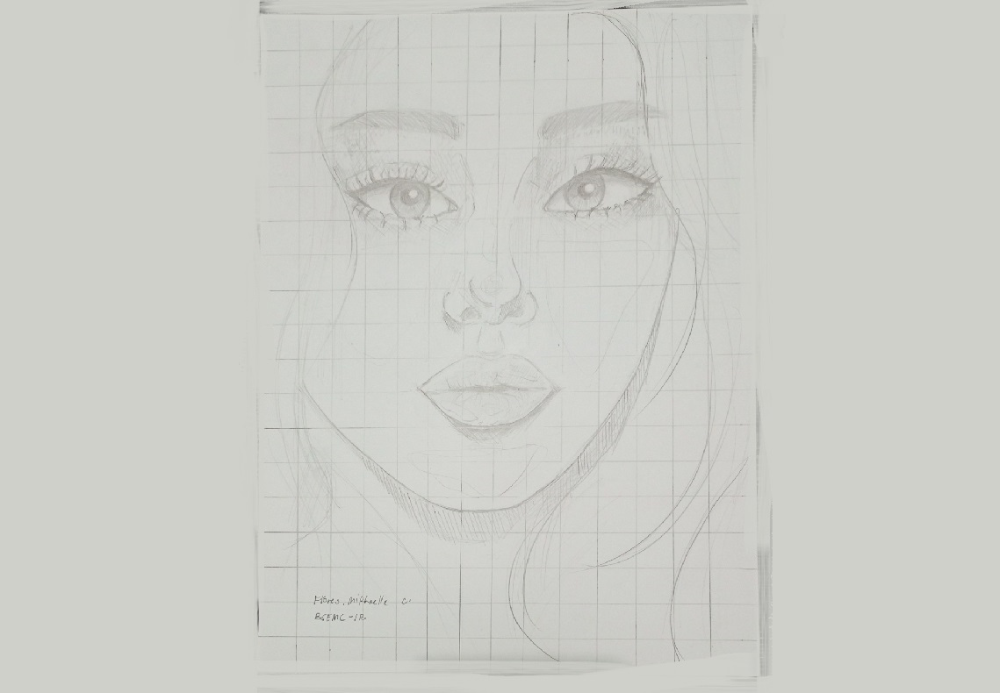

Traditional Art

Beam and Denji
A manga panel fan art from the comic "Chainsaw Man" created by Tatsuki Fujimoto.
Isagi Yoichi
A manga panel fan art from the comic "Blue Lock" created by Kaneshiro Muneyuki.
Death
I used few black gel pens for this art piece and a watercolour paper.

Eye Semi Realism
Tried doing realism for the first time, watched few tutorials and techniques, tried applying it to my art and the results aren't disappointing but it indeed needs improvements.
Eye Realism
Drew this for college application. Fortunately, I got accepted.
Imoto Zaichi
Drew this while on an art slump. Took me 3 weeks to finish this. Eventually, I got back up again.

Realism Portrait
A semi realism, another school activity, it was fun drawing this piece.
David of Michael Angelo
Drew another realism for a school activity, took me around 7 hours in total.